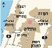

הפקעות ופגיעות תכנוניות במקרקעין
תואר שני לעו"ד - מסלול מסחרי
|
99-751 ד"ר יפעת הולצמן-גזית |
 |
עדכון אחרון: 19/07/2009 20:18
לקורס הפקעות ופגיעות תכנוניות במקרקעין לתואר ראשון - לחץ כאן
סיכומי שיעור
תשס"ט:
מחברת קורס מצטברת - זאב אינגבר
:תשס"ו
מסכם: ליאור צירלין
01.11.05 , 15.11.05 , 22.11.05 , 03.01.06 , 12.01.06
מסכמת: לימור ארד
01.11.05 , 08.11.05 , 15.11.05 , 22.11.05 , 06.12.05 , 20.12.05 , 03.01.06 , 12.01.06 , 17.01.06 , 24.01.06 , מחברת קורס מצטברת
מסכם: ארז יוסף
08.11.05 , 15.11.05 , 22.11.05 , 06.12.05 , 20.12.05 , 03.01.06 , 17.01.06 , 24.01.06 , מחברת קורס מצטברת 08.11.05 - 24.01.06
מסכם אנונימי
מחברת חלקית על בסיס הסילבוס , 17.01.06 , 24.01.06
מסכמת: נעמה בולטין - הוקלד ע"י לימור ארד
סיכומי פסיקה
סיכומי פסיקה - קרן, רוית, שירה ל, חגית, כרמית, חגי, עמוס, עידית, מרב, ליאור ונעמה
הכנה למבחן
מיפוי נושא-חקיקה-פסיקה - ליאור צירלין
מגמות בפסיקה - בייניש דורנר מלץ ברק - ליאור צירלין
הנחיות למבחן תשס"ו
הבחינה בחומרים סגורים מלבד קובץ חוקים ורשימת קריאה לא מסומנים. משך הבחינה שעתיים וחצי לא תנתן הארכה. הגבלת נפחת כתיבה 5 עמודים בלבד. הבחינה כווללת שלש שאלות. שתי שאלות קייס, ושאלה פתוחה
מבחנים משנים קודמות
תשס"ו - מועד א + כתבה רלוונטית + פס"ד 5964/03 ארידור - התיישנות בהפקעה + פתרון בציון 90 - נעמה
מועד ב - הפס"ד בשאלה 1: 280/05 תומר לוין נ' ועדה מקומית לתכנון ולבניה חיפה (באדיבות נבו הוצאה לאור בע"מ nevo.co.il המאגר המשפטי הישראלי) + פתרון בציון 97